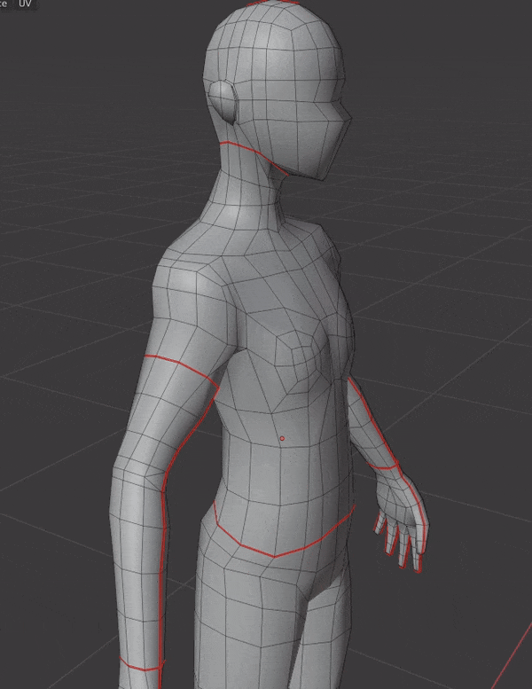
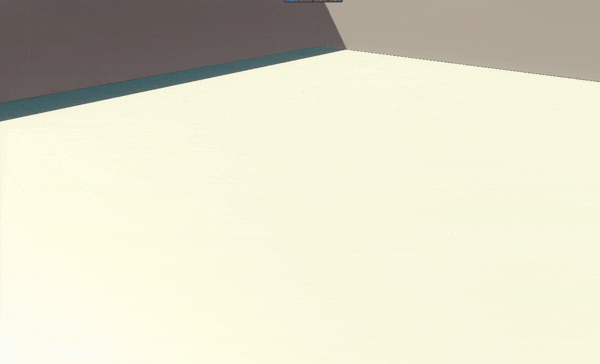

Neomars XIII
3D Artist / Tech Art

📅 Duration
1 month
👥 Team
5 people
🛠️ Technologies
Unity, Blender, Shader Graph
📖 Description
NeoMars XIII takes you into a neo-futuristic version of Marseille, called Neo-Massilia. You play as a beginner pétanque player. Explore the city and challenge the top players who dominate it in a futuristic version of pétanque, enhanced with new rules. NeoMars XIII is a project I worked on as a 3D Artist and Technical Artist.
🎯 My role
- 3D Artist
- Technical Artist
⚡ Challenges
The main challenges were creating a reusable low-poly character to populate NPCs, and designing a retro-style 3D asset loading effect for the pétanque courts.
🎯 Challenge: Reusable NPC character
How can a single character be used to populate the entire gameplay area while making the experience feel lively?
👉 Solution : I created a neutral base character and defined variation through clothing and style. The base model was built in low poly, and different outfits were created using the same topology. This allows modifications to the clothing (to a certain extent) while keeping the same rig and weight painting from the base model.
💡 What I would improve : I would have liked to create more clothing variations to increase visual diversity among NPCs.

🎯 Challenge: Retro 3D asset loading effect
How can we visually create a retro-style 3D asset loading effect so that the player understands they are in a simulation, with the environment appearing in real time ?
👉 Solution : I created a shader that combines two textures with a vertical dissolve effect.
The shader uses two masks:
- One applies a procedural grid-like texture (retro / retrowave style) using a vertical dissolve
- The other applies the final texture, also using a vertical dissolve
This effect reinforces the feeling of being inside a simulation.
💡 What I would improve : I would improve shading and texture issues that appear during the transition when the geometry appears and disappears.

Vidéo